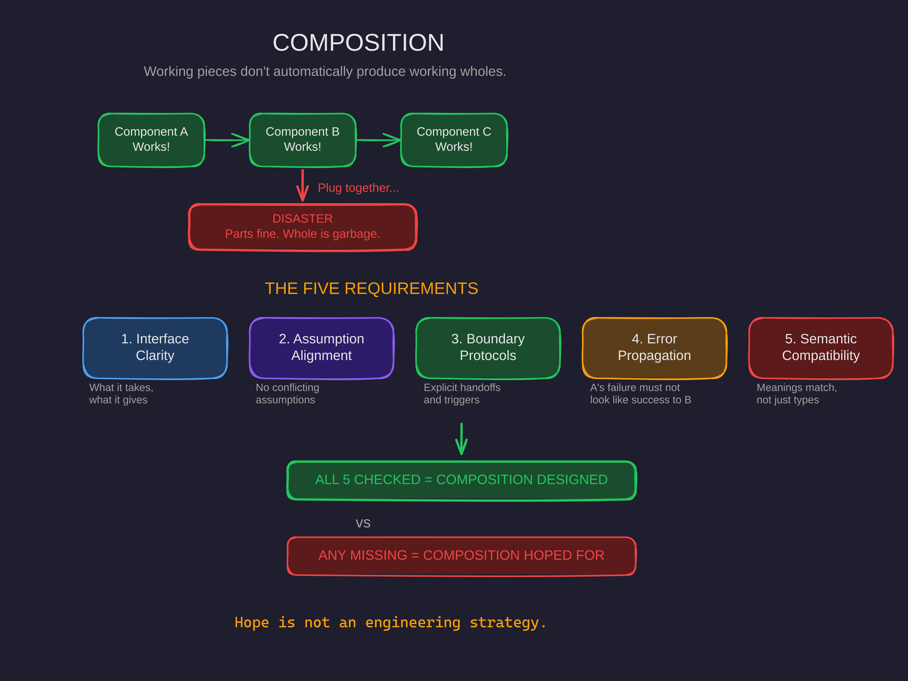

Composition
Working pieces don't automatically produce working wholes. Composition has to be designed.

The Assembly Lie
You build Component A. It works perfectly. You build Component B. Flawless. Component C, D, E — all tested, all green, all shipping.
Then you plug them together.
Disaster. Not because any piece is broken. Every piece is beautiful in isolation. But together? Interfaces mismatch. Assumptions collide. Data flows in shapes nobody agreed on. Errors in A look like success to B. The same field name means different things on different sides of the boundary.
You've just discovered the hard way that composition is not assembly.
Individual component quality doesn't guarantee composition quality. The agent system had individually-correct loops that failed in combination. The parts were fine. The whole was garbage.
The Five Requirements
After watching this pattern repeat across software, teams, strategies, and frameworks, a clear picture emerges. Successful composition requires exactly five things. Miss any one of them and the combination fails — no matter how good the individual pieces are.
1. Interface Clarity
Each component must declare what it takes and what it gives. Not just types — semantics. What does this input mean? What guarantees does this output provide? Ambiguous interfaces produce misinterpretation even when both sides are "correct."
2. Assumption Alignment
Every component makes assumptions about its environment. For composition to work, those assumptions must not conflict. If A assumes the data is sorted and B assumes it doesn't matter, you get a time bomb that only detonates at scale.
3. Boundary Protocols
Where A ends and B begins must be explicit. What triggers the handoff? What's transferred? What's expected back? What happens when it fails? Implicit boundaries are where composition goes to die.
4. Error Propagation
When A fails, what does B see? If A's failure looks like A's success to B, your composition is broken in a way that won't show up in unit tests. It'll show up in production, at 2 AM, when the data has been silently corrupted for six hours.
5. Semantic Compatibility
Not just "the types match" but "the meanings match." Component A returns user_id. Component B expects user_id. Types match. But A means "the database row ID" and B means "the auth provider's external ID." The composition compiles. The composition runs. The composition produces garbage.
Composition Debt
When composition is ignored during building, debt accumulates. And unlike financial debt, composition debt compounds multiplicatively.
- "We'll figure out the interface later." Later means pain. The implementation has already baked in assumptions that can't be changed without a rewrite.
- "It should just work." "Should" is debt. "Will, because the contract says so" is engineering.
- "A and B share this state." Shared state is coupled fate. Change one, break the other. Eventually, change anything, break everything.
- "We'll deal with error handling later." Failure modes compose too. If you don't design how failures propagate, failures will design it for you.
Each piece of composition debt makes the next composition harder. Eventually you reach a state that every long-lived codebase and every mature organization knows intimately: nothing can be changed without breaking everything else. The system is frozen, not by design, but by accumulated composition debt.
Composition debt compounds. Every poorly-composed piece makes subsequent composition harder. Eventually: a system where change is impossible without cascading breakage. The debt isn't in the pieces. It's in the spaces between them.
Composition-First Design
The alternative is simple in principle, demanding in practice: design for composition from the start.
- Define interfaces before implementing. What will this component take? Give? Guarantee? Define it first. Then build to the interface. The interface constrains implementation — that's the point.
- Surface assumptions explicitly. For each component: what does it assume about inputs? Environment? Concurrency? When composing: compare assumption lists. Conflicts discovered during debugging cost 10x more than conflicts discovered during design.
- Test composition, not just components. Component tests passing tells you nothing about composition quality. After unit tests: test A → B. Test B → C. Test A → B → C. Test error propagation across every boundary.
The investment is upfront. The payoff is permanent. Composition-first systems grow naturally. Composition-ignorant systems fossilize.
The Composition Checklist
Before combining any two things — functions, modules, teams, strategies — run through this:
- Interface: What does A give? What does B take? Is it explicit?
- Semantics: Do the meanings match across the boundary?
- Assumptions: What does A assume? What does B assume? Are they compatible?
- Boundary: What triggers handoff? What's transferred? What returns?
- Errors: How does A's failure appear to B? Is it handled?
All boxes checked means composition is designed. Missing boxes means composition is hoped for. And hope is not an engineering strategy.
Why This Matters for Your Business
Every business is a composition problem. Departments compose into organizations. Workflows compose into processes. Tools compose into stacks. People compose into teams.
When a project fails despite every team delivering their part on time, that's a composition failure. When a tool stack produces weird results despite each tool working perfectly, that's a composition failure. When a strategy makes sense on paper but falls apart in execution, odds are good that the components weren't designed to compose.
This is especially critical when adding AI to your operations. An AI agent isn't a standalone magic box. It's a component that has to compose with your existing systems, your team's workflows, and your data pipelines. If you don't define the interfaces — what goes in, what comes out, what the semantics are — you get the same composition failures you get everywhere else. Just faster and at scale.
The organizations that win with AI are the ones that treat it as a composition problem: define the interfaces first, surface the assumptions, test the boundaries, handle the errors. The ones that lose are the ones that plug AI in and say "it should just work."
Working pieces don't produce working wholes. Not in code. Not in teams. Not in AI deployments. Composition must be designed — and the ones who design it first will outrun the ones who debug it later.